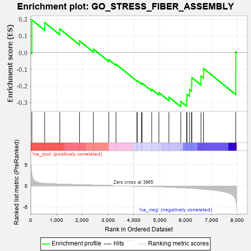
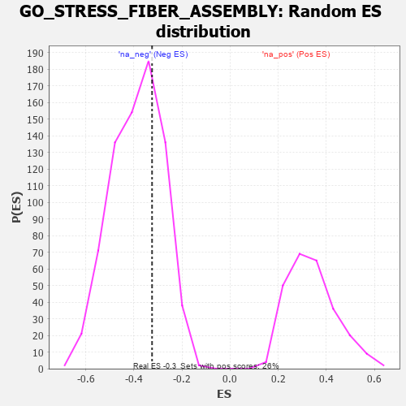

| | | Dataset | 7d |
| Phenotype | NoPhenotypeAvailable |
| Upregulated in class | na_neg |
| GeneSet | GO_STRESS_FIBER_ASSEMBLY |
| Enrichment Score (ES) | -0.3242119 |
| Normalized Enrichment Score (NES) | -0.8367878 |
| Nominal p-value | 0.695302 |
| FDR q-value | 0.9793161 |
| FWER p-Value | 1.0 |
Table: GSEA Results Summary

Fig 1: Enrichment plot: GO_STRESS_FIBER_ASSEMBLY
Profile of the Running ES Score & Positions of GeneSet Members on the Rank Ordered List
| PROBE | GENE SYMBOL | GENE_TITLE | RANK IN GENE LIST | RANK METRIC SCORE | RUNNING ES | CORE ENRICHMENT | | 1 | TGFB3 | | | 49 | 2.654 | 0.1956 | No |
| 2 | SRF | | | 542 | 0.615 | 0.1804 | No |
| 3 | SRC | | | 1128 | 0.459 | 0.1417 | No |
| 4 | CUL3 | | | 1893 | 0.321 | 0.0700 | No |
| 5 | MET | | | 2430 | 0.240 | 0.0208 | No |
| 6 | WNT4 | | | 3023 | 0.146 | -0.0426 | No |
| 7 | SMAD3 | | | 3303 | 0.105 | -0.0697 | No |
| 8 | MTOR | | | 4114 | -0.025 | -0.1697 | No |
| 9 | ABL1 | | | 4125 | -0.027 | -0.1690 | No |
| 10 | WNT11 | | | 4282 | -0.056 | -0.1843 | No |
| 11 | BAG4 | | | 4314 | -0.061 | -0.1835 | No |
| 12 | LIMK1 | | | 4684 | -0.136 | -0.2196 | No |
| 13 | ARAP1 | | | 4963 | -0.191 | -0.2401 | No |
| 14 | EPHA1 | | | 5349 | -0.285 | -0.2668 | No |
| 15 | BBS4 | | | 5806 | -0.407 | -0.2932 | Yes |
| 16 | RAC1 | | | 6036 | -0.484 | -0.2852 | Yes |
| 17 | EVL | | | 6052 | -0.490 | -0.2499 | Yes |
| 18 | ROCK1 | | | 6152 | -0.520 | -0.2228 | Yes |
| 19 | TPM1 | | | 6226 | -0.545 | -0.1905 | Yes |
| 20 | CDC42 | | | 6236 | -0.548 | -0.1500 | Yes |
| 21 | ALMS1 | | | 6590 | -0.704 | -0.1408 | Yes |
| 22 | PAK1 | | | 6691 | -0.757 | -0.0959 | Yes |
| 23 | ARRB1 | | | 7935 | -3.377 | 0.0045 | Yes |
Table: GSEA details [plain text format]

Fig 2: GO_STRESS_FIBER_ASSEMBLY: Random ES distribution
Gene set null distribution of ES for GO_STRESS_FIBER_ASSEMBLY